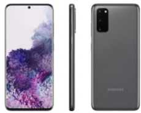

Park Gyeol
/ student
자기소개
취미
활동
SNS
GALAXY S3
GALAXY S4
GALAXY S5
GALAXY S6
GALAXY S7
GALAXY S8
GALAXY S9
GALAXY S10
GALAXY S20
GALAXY S21
GALAXY S20
 갤럭시S20은 개인적으로 작년에 군대에 있었기 때문에 실물로 본 적이 한 번도 없는 유일한 갤럭시 S 시리즈입니다.
각종 커뮤니티와 유튜브를 통한 정보만 알고 있는 것들을 통해 홍보 포인트를 잡아보겠습니다.
이 시리즈 또한 울트라 버전이 메인이라고 생각하여 울트라를 기준으로 작성하겠습니다.
사양은 스냅드래곤 865, 최대 16GB 램, 6.9인치 20:9비율의 QHD+해상도의 디스플레이 등을 탑재하고 있습니다.
특징은 배터리가 어마어마한데 5천 mAh를 탑재하고 있습니다.
또 4800만 화소 카메라가 탑재되어서 100배 망원 줌을 지원하는 것이 특징이었습니다.
사실 광각 카메라는 사용하는 사람들이 많았지만 망원 카메라는 엄청 자주 사용하는 사람들이 없어서
처음에는 왜 필요한가라는 생각이 들었는데 픽셀을 16개를 묶어서 화질을 업 시켜 1200만 화소로 만들어준다는 말을 들었을 때 이해하게 되었습니다.
또한 120hz 주사율을 지원해서 스크롤이나 지원하는 게임을 할 때 엄청난 차이를 보여주었습니다. 또한 HDR10+를 지원하기 때문에 넷플릭스를 본다면 HDR 콘텐츠를 충분히 소비할 수 있었습니다.
디자인은 기본적으로 예쁜 디자인은 계속 이어져왔지만 카메라 부분이 너무 크다는 게 아쉬운 점이었습니다.
이제 홍보 포인트를 잡아보자면 일단 카메라를 얻고 디자인을 잃은 폰인 만큼 카메라의 성능이 압도적으로 좋다는 점을 강조하고
화면 또한 120주사율에 1200니트 밝기까지 지원하는 HDR10+를 지원하여 요즘 각광받고 있는 콘텐츠 소비 면에서 압도적 이점을 가지도 있다는 점을 강조하면
좋을 것 같고 그것을 뒷받침해 줄 배터리 또한 5000mAh로 충분하며 45W 고속 무선 충전까지 지원을 하기 때문에 충전 속도도 빠르다는 점을 강조하면 될 것 같습니다.